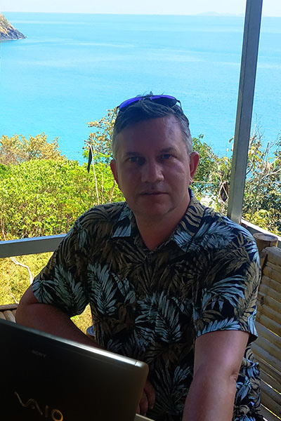

Про меня
Меня зовут Алексей
Мне 47 лет. Начал работать в полиграфии в конце 90-х гг. У меня более чем 20-летний опыт работы графическим дизайнером и верстальщиком в этой области. Работал с книгами, журналами, каталогами и прочей полиграфической продукцией. Возглавлял отделы верстки издательств, в т.ч. одного из крупнейших в свое время - "Деловой мир".
Последнее время мои интересы устремлены в область web-технологий. Это в основном frontend-разработка и при необходимости web-дизайн.
Верстаю сайты на HTML5 и CSS3. Пишу чистый современный код на JavaScript. Работаю в среде Node.js. Использую для работы git, gulp, Webpack, препроцессоры, фреймворки. Могу установить сайт на WordPress.
Дизайн и верстка
Дизайн и верстка различной полиграфической продукции (листовок, буклетов, журналов, каталогов и т.п.) с нуля по тех. требованиям либо согласно фирменному стилю. Отрисовка лендингов. Разработка дизайна сайтов.
Препресс
Подготовка и сдача макетов в печать согласно техническим требованиям типографий, курирование заказа и общение с типографиями.
Цветокоррекция и адаптация изображений
Владею цветокоррекцией, ретушью. Подготовавливаю изображения как для печати в соответствии с требуемым профилем, так и для web под различные разрешения и плотность пиксейлей. Работал на цветопробном оборудовании.
Web-разработка
Адаптивная и кроссбраузерная верстка web-страниц, адаптация под различные устройства. Работа с CSS-препроцессорами. Cоздание скриптов на JavaScript. Сборка фронтенда с gulp и/или webpack. Работа с системой контроля версий Git. Установка сайта на движок WordPress.